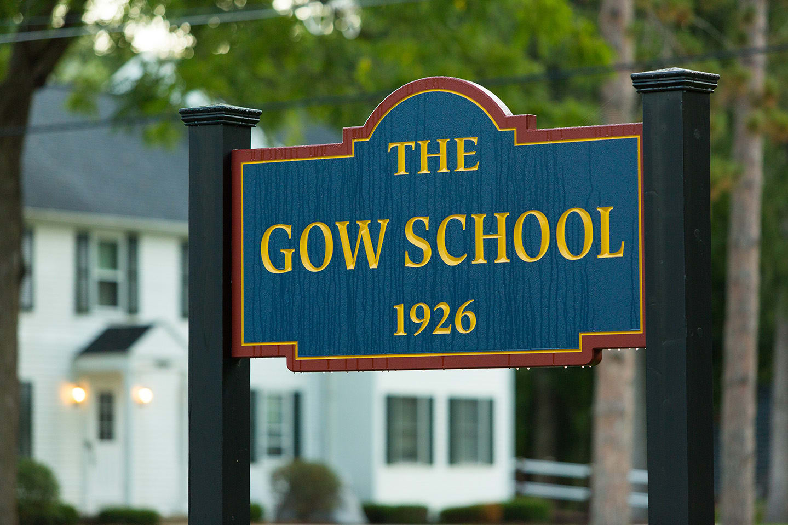

- I went to a small boarding school called The Gow School. (Point 2)
- 
At this small school, I meet many people. Most of these people are ok but not the best at sports. I have always been a starter for the teams I play for. But, I do not go to this fancy school for sports. I do still attend class. The best way I find to balance the two is to do sports first. In my experience, people under the age of 21 do not go to sleep on average until at least 23 O'clock. This means that if you have any intelience you can do the homework later in the day if you havent alreadty completed it earlier in the day. But, it would be inconcrivable folly not to do the work in general. Also in my experience, if one gets behind, it can be hard to make up missed work. So, if you do not possess a good memory, do the work first and then sports unless their is a special occassion like a game.
Return